Overview
This walks through getting a turning-movement-count (TMC) recording off a Miovision
Scout and turned into a finished traffic count. It uses two separate Miovision tools:
Traffic Data Online (trafficdataonline.com) to upload and
configure the study, and Miovision DataLink
(datalink.miovision.com) to find the finished study and download its
report once Miovision has processed it.
- Study type: TMC Study — Roundabout Study and ATR Study are only for those specific setups.
- Video storage: Forever (Included) — keeps the raw video archived.
- Classification: Lights / Mediums / Articulated Trucks — add the crosswalk pedestrian/bicycle counts only when the scope calls for it, both cost extra.
- Turnaround: Standard, ~72 hours — 24/48 hour turnaround costs extra.
- Traffic flow: Right-hand traffic (US default).
Open Projects
From the Traffic Data Online home screen, under "What would you like to
do?", click the Projects icon.
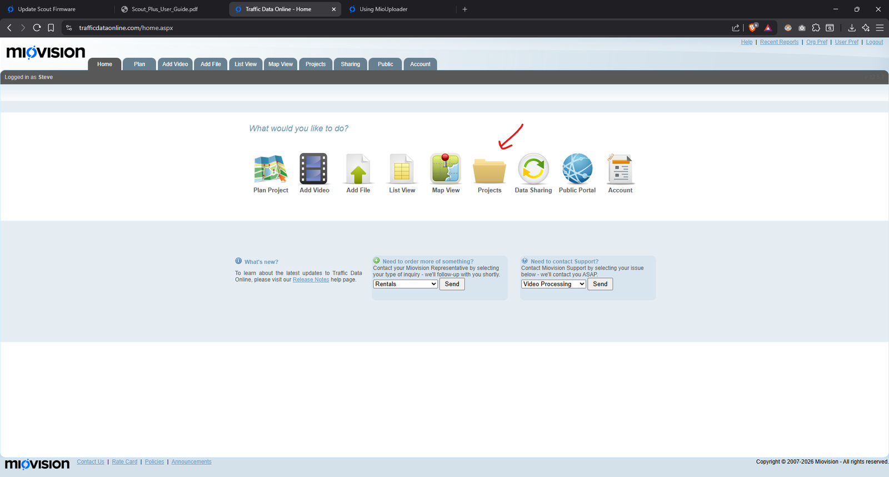
Create the Project
On the Projects tab, click Create New Project — or open an
existing project if this count already belongs to one.
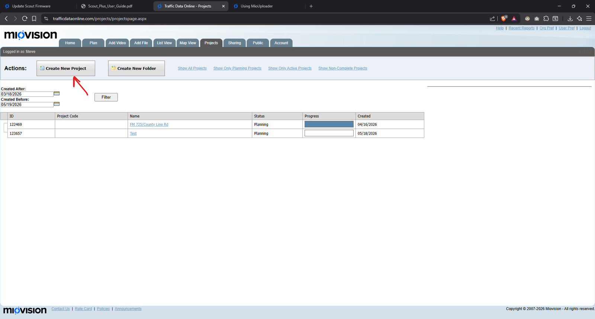
Open Add Video
Switch to the Add Video tab in the main navigation.
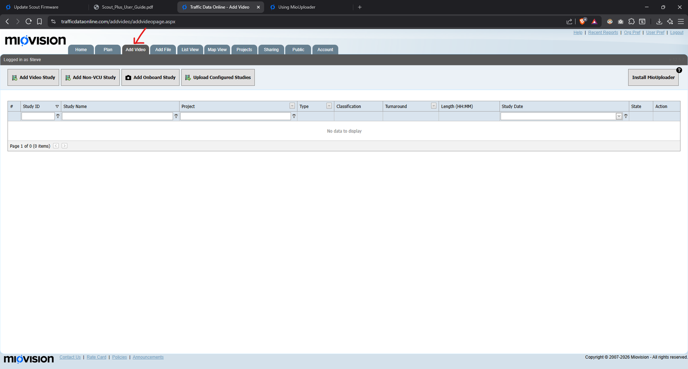
Add a Video Study
Click Add Video Study to attach a recorded count to the project.
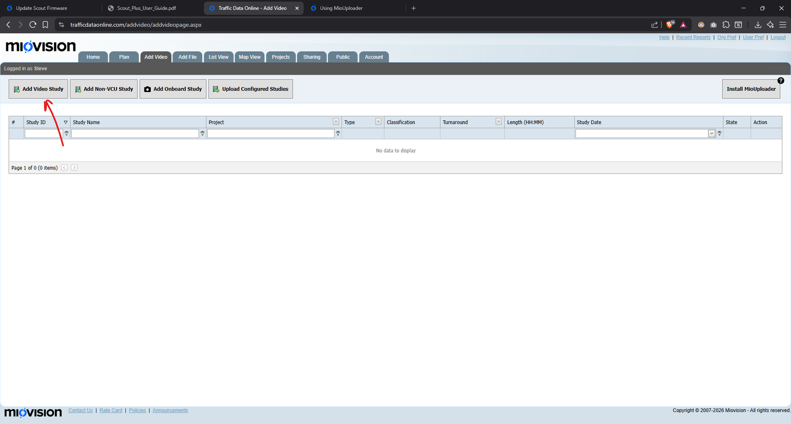
Choose the Study Type
In Select Study Type, pick TMC Study for a standard
turning-movement count — it covers most everyday intersection counts. Roundabout
Study and ATR Study are for those specific setups.
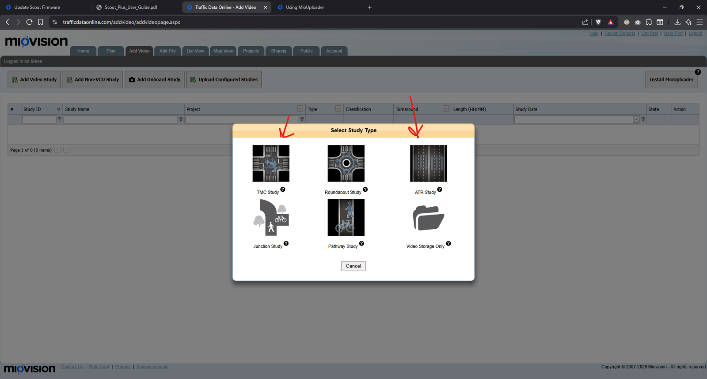
Browse for the .mio File
In Select Videos, click Browse for a Mio file.
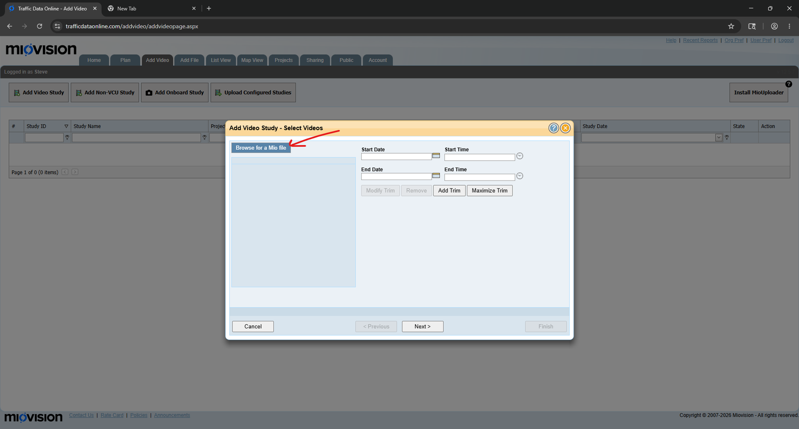
Find the File on the Scout's Drive
The .mio file sits on the flash drive pulled from the Scout, alongside
its .mp4 clips, .log, and .schedule files for
that recording. Select it.
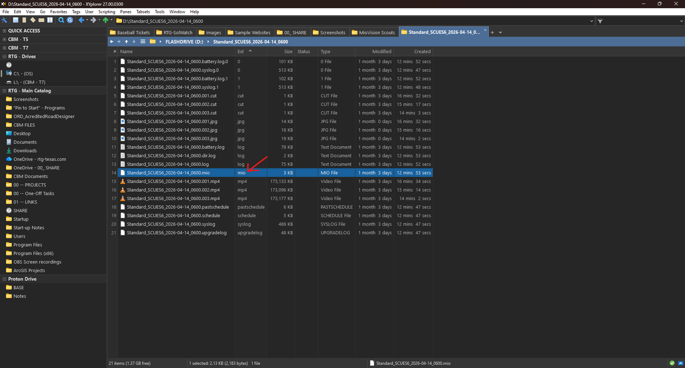
Set the Trim Range
Click Maximize Trim to load the full recorded window into the trim
selection, then Next.
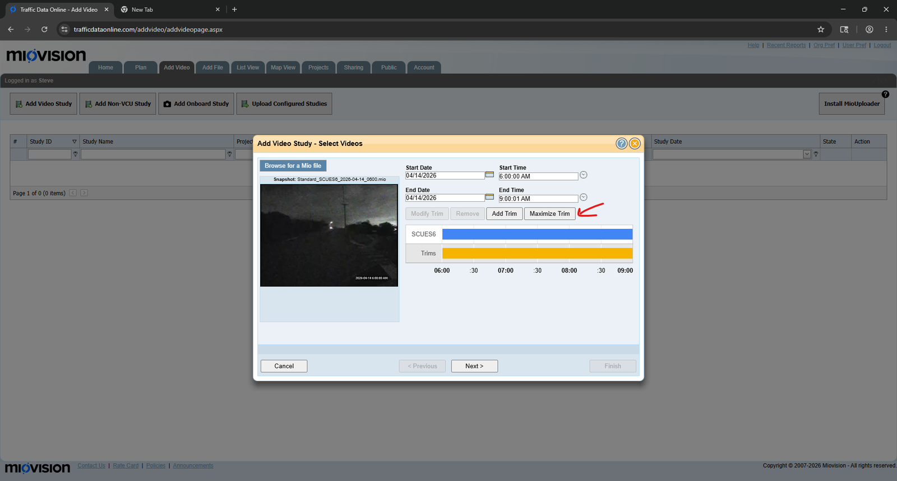
Set Study Options
Name the study, confirm its Project, and set
Video Storage to Forever (Included) so the raw video
stays archived. Leave Turnaround Time on Standard and Traffic Flow on Right-hand
traffic unless the job needs otherwise.
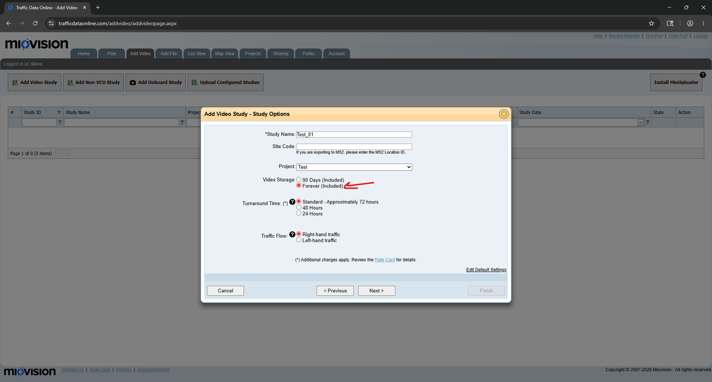
Set Classifications
Pick Lights / Mediums / Articulated Trucks for most counts. Only check
Count Pedestrians on Crosswalks and Count Bicycles on
Crosswalks when the scope calls for it — both add cost.
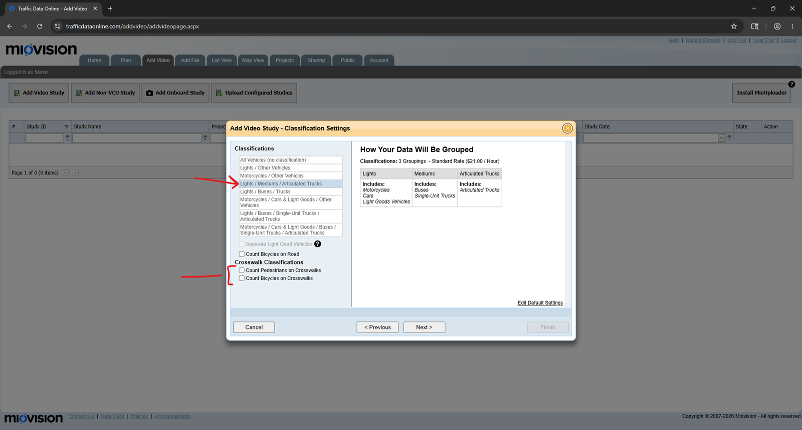
Set the Location, Then Annotate the Legs
Right-click the map to drop a pin where the Scout was mounted — or hover an existing grey pin to reuse it.
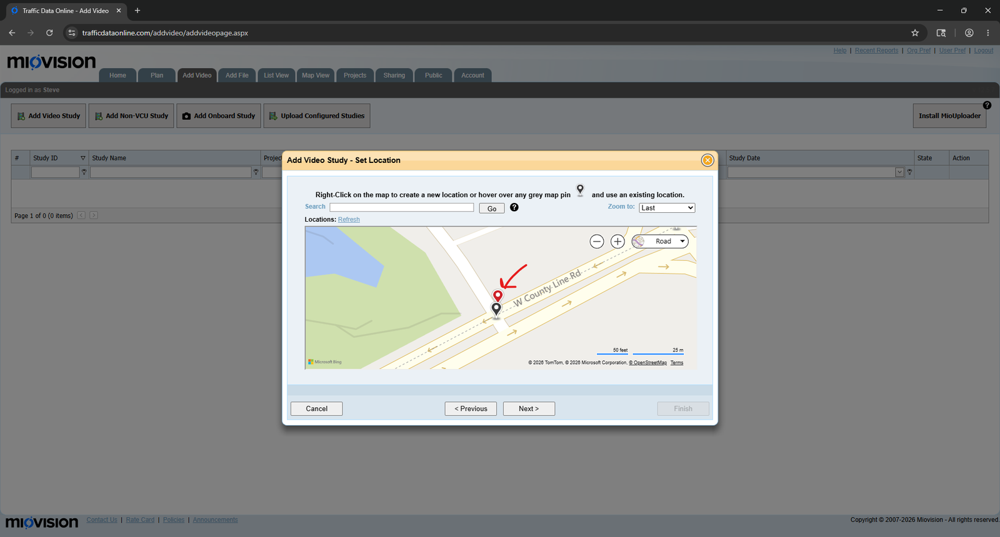
Then, in Annotate Study, name each leg, set its compass direction,
and flag any one-way legs or right-turn-on-red movements. Use
Additional Instructions for anything unusual — camera count,
direction limits, and so on.
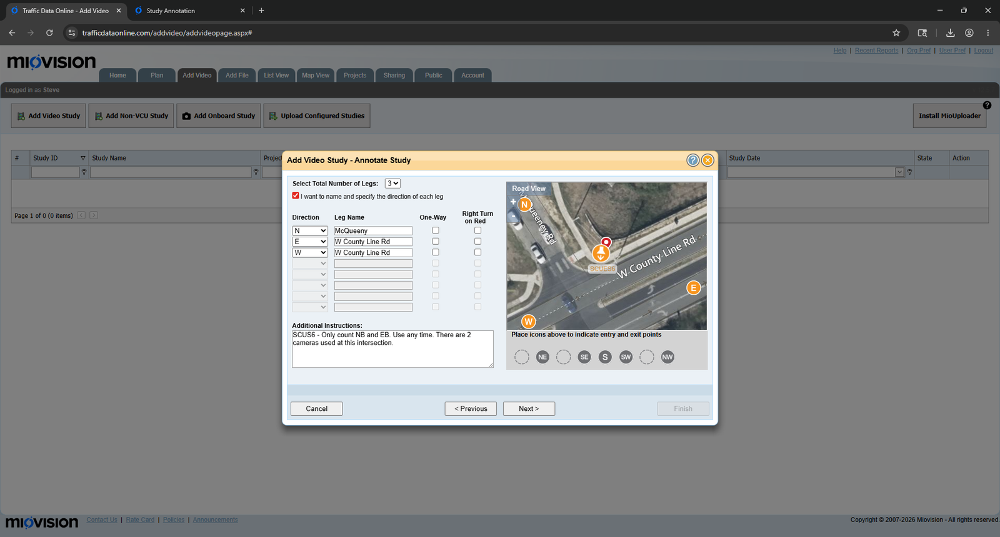
Switch to the Right Account in DataLink
Once Miovision has finished processing, studies show up in
Miovision DataLink (datalink.miovision.com). If a study
isn't showing up, check the account switcher, top-right — make sure the correct
account is selected.
Different accounts see different studies. If a finished count is missing, this is almost always why.
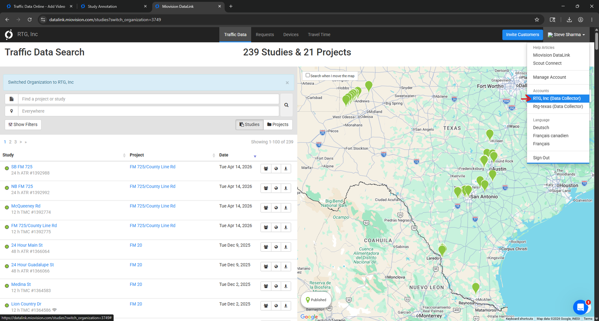
Review the Study, Then Download the Report
Open the finished study to see its snapshot — volumes by class, Peak Hour Factor, and the source video.
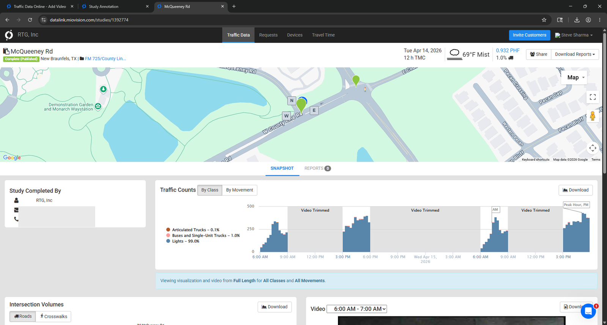
Use Download Reports → Generate Report to pick a format (Excel,
CSV, PDF, UTDF, or GEOCOUNTS) and a bin size, then Create Report.
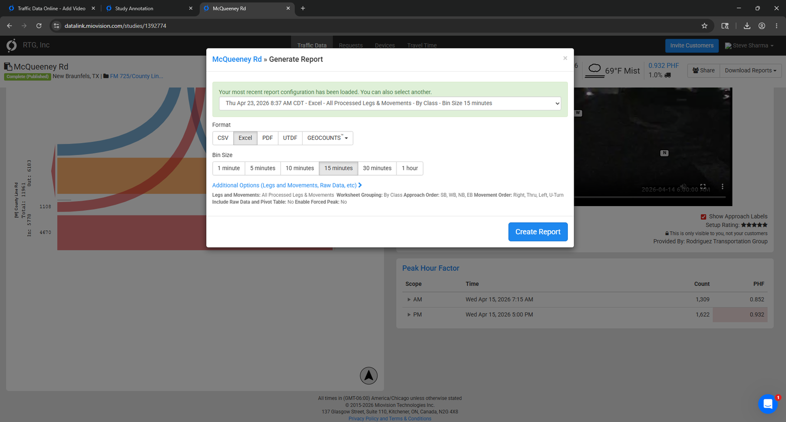
Glossary
| Term | Definition |
|---|---|
| ATR | Automatic Traffic Recorder study — counts volume/speed/classification on a road segment, without turning movements. |
| DataLink | Miovision's portal (datalink.miovision.com) for finding finished studies, viewing their snapshot, and generating reports. |
| .mio file | The study index file the Scout writes alongside its video clips, which Traffic Data Online reads to reassemble the full recording for upload. |
| PHF | Peak Hour Factor — a measure of how evenly traffic volume is distributed within the peak hour (closer to 1.0 is more even). |
| Scout | Miovision's portable video traffic-counting camera unit, deployed at an intersection to record a study. |
| TMC | Turning Movement Count — a study that classifies and counts vehicles by the specific turn they make at each leg of an intersection. |
| Traffic Data Online | Miovision's upload & configuration tool (trafficdataonline.com) — where a study is created, its video attached, and its classification/location settings are set. |
| UTDF / GEOCOUNTS | Two of the report export formats Miovision offers alongside Excel, CSV, and PDF, aimed at specific traffic-modeling software. |